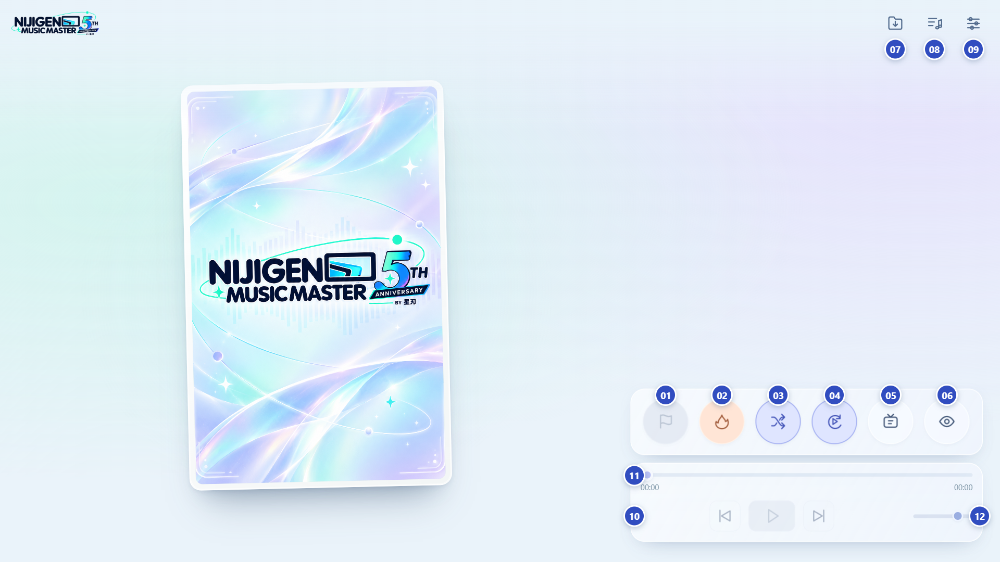

01
开一局 / 结束
开始游戏后，按钮变红，边框流动高亮。
再次点击结束，回到普通播放。
NIJIGEN MUSIC MASTER · 5TH ANNIVERSARY
先导入曲包，随时听歌；准备好后，开一局。

开始游戏后，按钮变红，边框流动高亮。
再次点击结束，回到普通播放。
播放默认或自选的热场音乐。
再次点击停止，不计入本局牌序。
选择新一局的出牌顺序。
游戏中切换，不改变本局牌序。
按片段时长自动切到下一首。
默认每首 30 秒，随后进入牌间空歇。
开启随机起播时，起点限制在 0～80 秒。
它不是“播放 90 秒”的开关。
开启后，游戏初段隐藏歌名与图片。
临近结尾和牌间空歇时才展示。
蓝色选中表示开关已开启；悬停图标可查看名称。片段、间隔与随机起点可在设置中调整。
选择 ZIP 歌包。Android 导入一次后，
下次启动自动恢复已授权的曲包。
按整包或单首勾选游戏曲目。
未开局时，点歌即可播放整首。
设置片段时长、间隔与起播位置。
也可更换热场音乐、导出对局记录。
未开局：普通音乐播放器，播放整首，始终显示歌名和图片。
开局后：应用游戏读牌规则；开局按钮变红，外框流动高亮。
暂停时也会暂停游戏中的牌间倒计时。
拖动跳转；游戏中限制在当前片段内。
左右拖动，调整歌曲和热场音量。